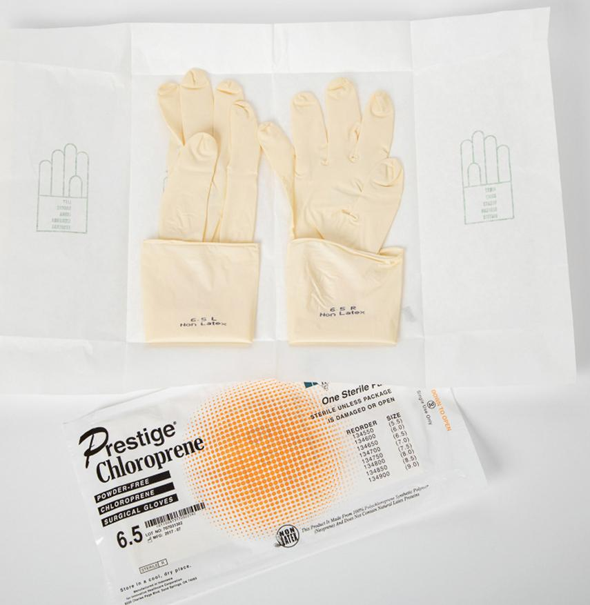

PART 2: TRAINING
8.5 Preview the Procedural Lab
Now that you, as a sterile compounding student, have a basic understanding of hand hygiene and garbing, you have the opportunity to preview—and subsequently perform—these preparatory procedures for sterile compounding.
First, read the Preview the Procedural Lab section. Then carefully read each step of the Procedural Lab section. Next, reinforce your understanding by watching the demonstration video. Once in the lab, your instructor will demonstrate the procedure, and then you will perform the procedure by following the steps in the Procedural Lab section. After sufficient practice, you will complete the procedural lab for competency assessment that will be observed by your instructor.
Anteroom Preparatory Procedures
For this procedural lab, you will perform the preparatory steps of hand hygiene and garbing in the anteroom before entering the buffer room. The entire process begins with covering the shoes and head and ends with the donning of sterile gloves. Because your gloved hands have direct contact with the CSP, they must be the cleanest area.
Garbing
Before you enter the anteroom, remove any items that are not easily cleanable or that are not necessary for compounding, including any outer garments that you are wearing, such as a coat, sweater, jacket, or hat. You must also remove earbuds or headphones.
If you are not already wearing appropriate lab attire, change into a clean scrub uniform. Ensure that your fingernails are neatly trimmed and absent of nail polish and that you have removed all cosmetics. You must also remove all hand, wrist, and other exposed jewelry including piercings that could interfere with the effectiveness of garbing or otherwise increase the risk of contamination. If your jewelry cannot be removed, you need to cover the jewelry. Finally, if you have long hair, pull back your hair with a binder.
To don garb, you must follow a specific order that is determined by your facility’s SOPs. Following an established garbing sequence helps to reduce the risk of contamination. For the purposes of this procedural lab, you will follow the garbing order outlined as follows.
First, don shoe covers as you step over the line of demarcation that separates the dirty side of the anteroom from the clean side of the anteroom. Shoe covers must never touch the dirty side of the anteroom. Once your shoe covers are in place, don a head cover. Ensure that all of your hair is covered and that your ears and forehead are completely covered.
After the shoe covers and head cover are in place, position a face mask over your nose and mouth. The face mask should cover the entire face, from below the chin to the bridge of the nose. Position the top tie or strap of the mask above the ears so that the mask does not slide down on your face. Don a facial hair cover, if appropriate. All facial hair must be covered.
Handwashing
Once you are appropriately garbed, proceed to the sink for handwashing. Because fingertips directly contact the CSP, hand-washing procedures are designed to move dirt from the fingertips toward the elbows. Thus, you will perform handwashing by alternating procedures between your right and left hands and then gradually alternate procedures on your forearms as you work your way toward the elbows. These hand-washing procedures must take a minimum of 30 seconds but often take a little longer.
Prior to using the prepackaged, surgical scrub sponge/brush, use the disposable nail cleaner that is included in the package to remove visible dirt from under your fingernails. Perform this fingernail cleaning while holding each finger under running water. After cleaning your fingernails, discard the nail cleaner. Then use the sponge side of the surgical scrub sponge/brush to clean the hands and forearms up to the elbow. After cleaning your fingernails, hands, and forearms, discard the surgical scrub sponge/brush. This tool is for one-time use only.
Exercise caution not to contaminate the fingers, hands, forearms, nail cleaner, or the scrub sponge/brush at any time by inadvertently touching these items to the sink or faucet. If accidental contact occurs, you should repeat the entire hand-washing process with a new nail cleaner and surgical scrub sponge/brush.
Donning a Gown or Coverall
The type of gown used in the sterile compounding area must meet the minimum standards defined in USP <797>. These standards state that sterile compounding personnel don gowns or coveralls. For the purposes of this procedural lab, you will don a gown.
When opening the gown from its packaging, be sure that the gown does not touch the floor or other contaminated surface at any time. Pull the gown up your arms and onto your shoulders. Secure the neck closure at the nape and then wrap the waist ties around your body and tie them in the back.
Remove your gown in the anteroom at the completion of compounding procedures. If you donned a disposable gown, place the gown in an appropriate waste container. If you donned a nondisposable gown, place the gown in a designated laundry container where it will be picked up by laundry personnel for cleaning.
Donning Sterile Gloves
The last part of the hand hygiene and garbing process involves the donning of sterile gloves. In practice, this procedure may be performed in either the anteroom or the buffer room. However, to facilitate training during this procedural lab, you will don sterile gloves while in the anteroom.
Prior to donning sterile gloves, remove the outer packaging of the gloves to reveal the inner, sterile packet containing the gloves. Then unwrap the sterile packet carefully so that the gloves do not come into contact with any nonsterile surface.

Next, sanitize your hands with an alcohol-based hand rub and allow your hands to dry through evaporation. Then pull the first glove onto the hand but leave the glove cuff folded over. Next, don the second glove by positioning the fingers on the gloved hand inside the folded cuff of the second glove and moving the fingers toward the arm in order to position the glove’s cuff over the wrist cuff of the gown. Repeat this procedure with the opposite hand to position the glove’s cuff of the first hand. The gloves should be pulled up over the wrist cuff of the gown so that they are firmly seated on the forearms, completely covering the wrist cuff of the gown. This placement ensures that the gloves will not slip down below the gown’s cuffs.
Sterile 70% IPA must be applied to gloves throughout the compounding process as needed. Provided that they are fully intact and have not experienced major contamination, they may be worn until exiting the cleanroom suite. Inspect the gloves regularly throughout the shift. If you see a hole, puncture, or tear in your gloves, remove them and perform handwashing or hand sanitizing before donning a new pair of gloves. Sterile gloves are for one-time use and must be disposed of immediately upon leaving the sterile compounding area.
Removal of Garb
Upon completion of sterile compounding procedures and prior to leaving the anteroom, sterile compounding personnel must remove the items worn in the reverse order from how the items were donned, starting with glove removal and ending with shoe covers. The order of removing garb, however, may vary according to a facility’s SOPs.
Finally, personnel should be aware that the doffing of garb generates many particles in the air. Consequently, the donning and doffing of garb should never occur at the same time among personnel in the anteroom.